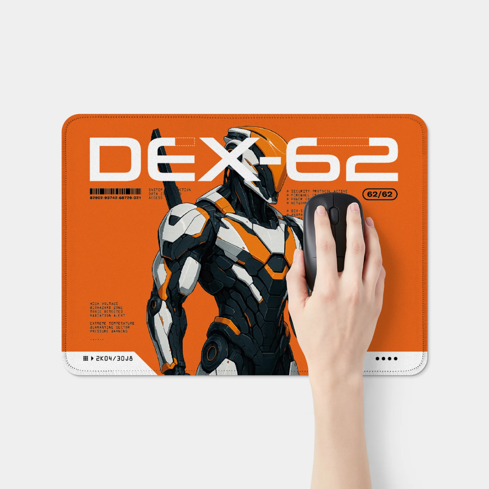
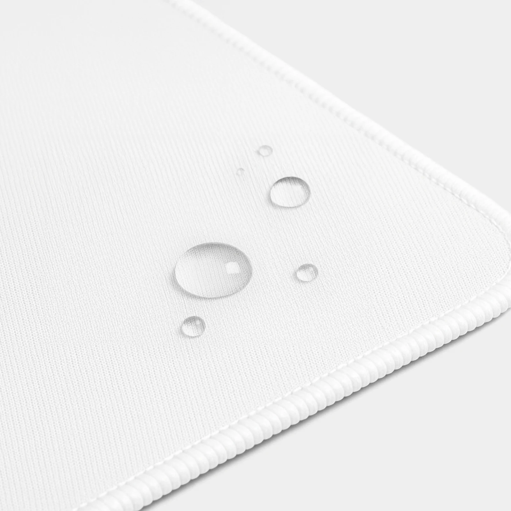
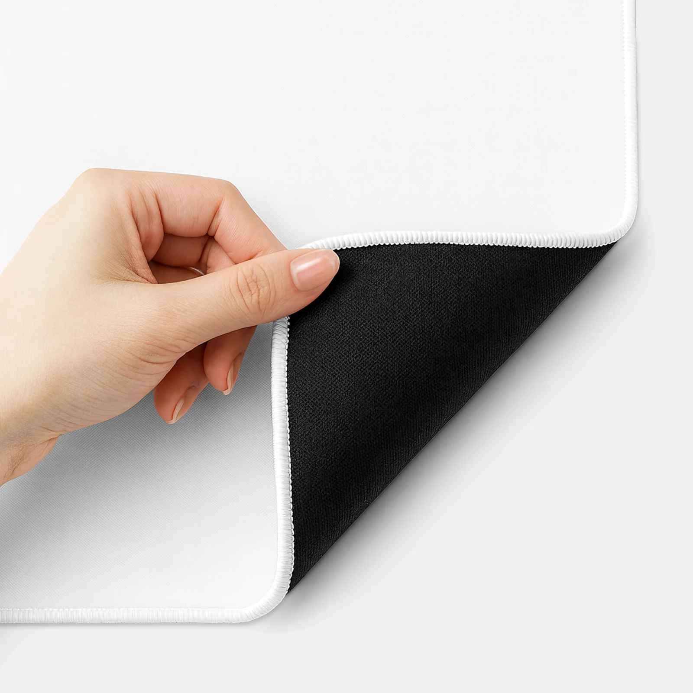
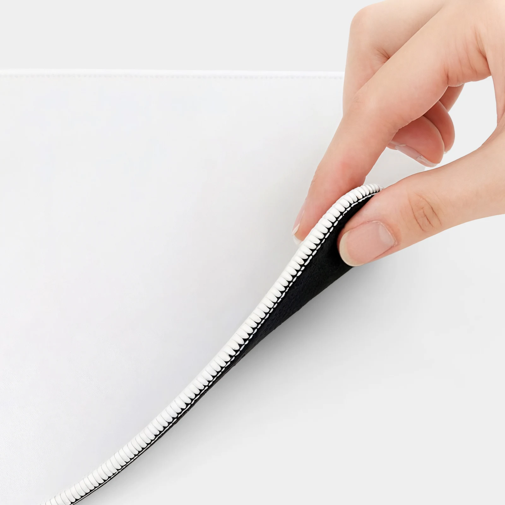
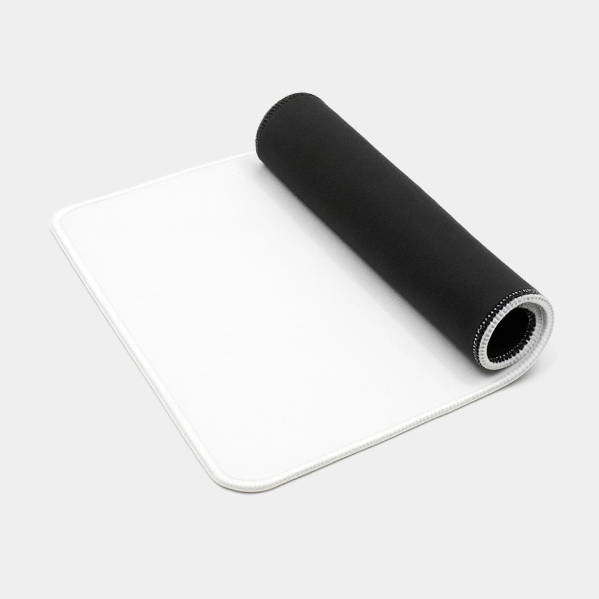
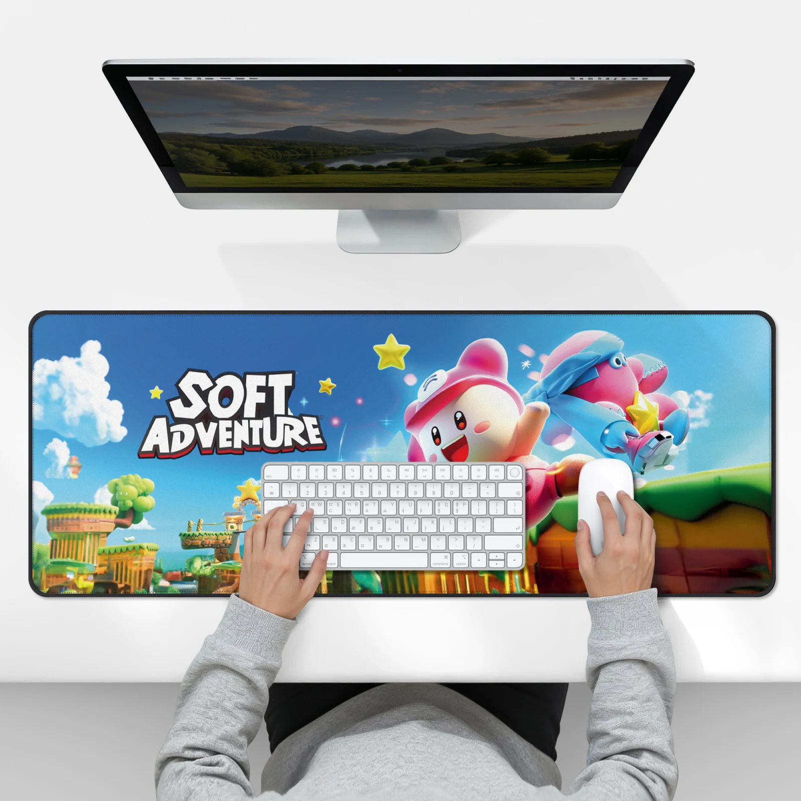

← 모든 작업물AI / 09
AI · Tech Accessories
테크 액세서리 이미지 제작
2025- 제작 연도
- 2025
- 작업 기간
- 2일
- 사용 프로그램
- Gemini, chatGPT, Photoshop
기여도 및 작업 범위
기여도 100%
마우스패드와 데스크매트의 사용 장면, 표면과 마감 디테일을 AI 이미지로 제작했습니다.





